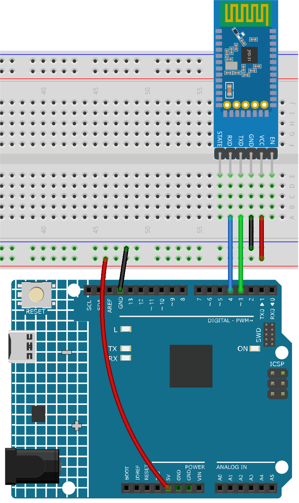
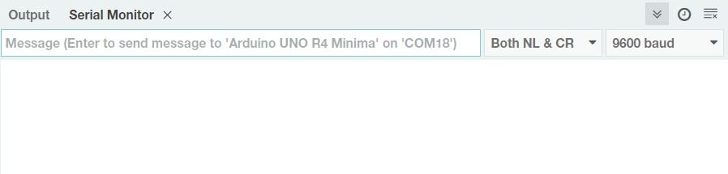
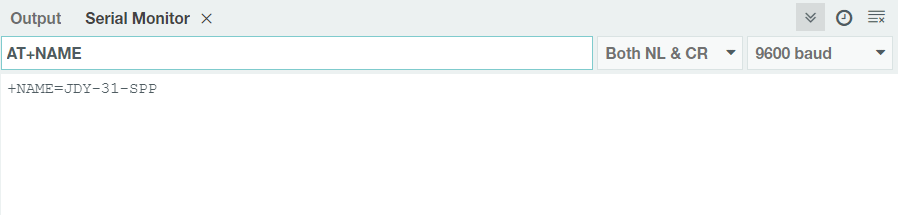
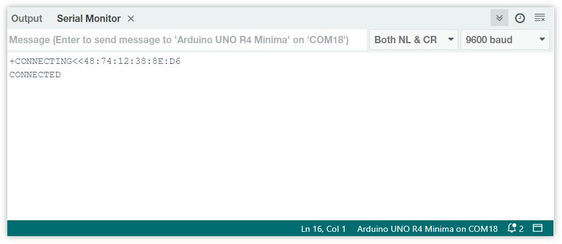
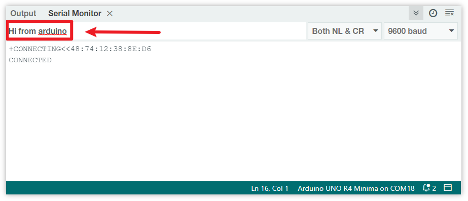

注釈
こんにちは、SunFounderのRaspberry Pi & Arduino & ESP32愛好家コミュニティへようこそ！Facebook上でRaspberry Pi、Arduino、ESP32についてもっと深く掘り下げ、他の愛好家と交流しましょう。
参加する理由は？
エキスパートサポート：コミュニティやチームの助けを借りて、販売後の問題や技術的な課題を解決します。
学び＆共有：ヒントやチュートリアルを交換してスキルを向上させましょう。
独占的なプレビュー：新製品の発表や先行プレビューに早期アクセスしましょう。
特別割引：最新製品の独占割引をお楽しみください。
祭りのプロモーションとギフト：ギフトや祝日のプロモーションに参加しましょう。
👉 私たちと一緒に探索し、創造する準備はできていますか？[ここ]をクリックして今すぐ参加しましょう！
Bluetoothで始めよう
このプロジェクトでは、Arduinoを通じてBluetoothモジュールとの通信方法を示します。
最初に、回路を設定し、ソフトウェアシリアル通信を使用します。BluetoothモジュールのTXピンをUnoボードのピン3に、RXピンをUnoボードのピン4に接続します。
1. 回路を作成する


2. コードをアップロード
ultimate-sensor-kit\iot_project\bluetooth\00-Bluetooth_start のパスの下で 00-Bluetooth_start.ino ファイルを開くか、このコードを Arduino IDE にコピペします。
このコードは、ArduinoのSoftwareSerialライブラリを使用してソフトウェアシリアル通信を確立します。これにより、Arduinoはデジタルピン3および4（RxおよびTxとして）を介してJDY-31 Bluetoothモジュールと通信できます。双方の間のデータ転送があるかどうかを確認し、一方から他方に9600のボーレートで受信メッセージを転送します。 このコードを使用すると、ArduinoのシリアルモニターでJDY-31 BluetoothモジュールにATコマンドを送信し、その応答を受信できます。
3. Bluetoothモジュールの設定
右上の虫眼鏡アイコン（シリアルモニター）をクリックし、ボーレートを 9600 に設定します。次に、「New Line」のドロップダウンオプションから「both NL & CR」を選択します。

以下は、ATコマンドを使用してBluetoothモジュールを設定するいくつかの例です： AT+NAME と入力してBluetoothデバイスの名前を取得します。Bluetoothの名前を変更したい場合は、 AT+NAME の後に新しい名前を追加してください。
Bluetoothデバイスの名前を問い合わせる:
AT+NAME
Bluetoothデバイスの名前を設定する:
AT+NAME（新しい名前に続く）。+OKは、設定が成功したことを意味します。再度AT+NAMEを送信して確認できます。
注釈
一貫した学習体験を確保するために、Bluetoothモジュールのデフォルトのボーレートを変更しないで、 そのデフォルト値である4（すなわち9600ボーレート）のままにしておくことが推奨されます 。関連するコースでは、9600のボーレートでBluetoothと通信します。
Bluetoothのボーレートを設定する:
AT+BAUD（ボーレートを示す数値に続く）。4 == 9600
5 == 19200
6 == 38400
7 == 57600
8 == 115200
9 == 128000
以下の表で他のATコマンドを参照してください。
コマンド |
機能 |
デフォルト |
|---|---|---|
AT+VERSION |
バージョン番号 |
JDY-31-V1.2 |
AT+RESET |
ソフトリセット |
|
AT+DISC |
切断（接続時有効） |
|
AT+LADDR |
モジュールのMACアドレスを照会する |
|
AT+PIN |
接続パスワードの設定・照会 |
1234 |
AT+BAUD |
ボーレートの設定・照会 |
9600 |
AT+NAME |
ブロードキャスト名の設定・照会 |
JDY-31-SPP |
AT+DEFAULT |
工場出荷状態にリセット |
|
AT+ENLOG |
シリアルポートステータス出力 |
1 |
4. スマートフォン上のBluetoothデバッギングツールを通じた通信
"Serial Bluetooth Terminal"というアプリを使用して、BluetoothモジュールからArduinoにメッセージを送信し、Bluetoothインタラクションのプロセスをシミュレートできます。Bluetoothモジュールは、受信したメッセージをシリアルポートを介してArduinoに送信します。同様に、Arduinoもシリアルポートを介してBluetoothモジュールにメッセージを送信できます。
Serial Bluetooth Terminalのインストール
Google Playより、 シリアルBluetoothターミナル をダウンロードしてインストールしてください。
Bluetoothの接続
まず、スマートフォンの Bluetooth を有効にします。

スマートフォンの Bluetooth設定 に進み、 JDY-31-SPP といった名前を探します。

見つけたら、ポップアップウィンドウで ペアリング を承認します。ペアリングコードが要求された場合は、"1234"と入力してください。

Bluetoothモジュールとの通信
Serial Bluetooth Terminalを開き、"JDY-31-SPP"に接続します。

接続が成功すると、シリアルポートモニターに成功のプロンプトが表示されます。

シリアルモニターでメッセージを入力し、Bluetoothモジュールに送信します。

送信後、このメッセージは Serial Bluetooth Terminal アプリで確認できます。同様に、このアプリを通じてArduinoにもデータをBluetoothで送信できます。

シリアルモニターで、Bluetoothからのこのメッセージを確認できます。